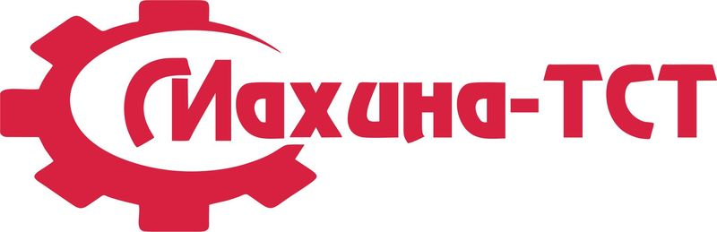
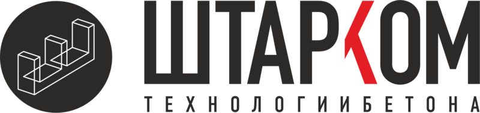
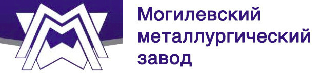

Группа компаний «Объединённые Ресурсы» - крупнейший поставщик материалов на строительные объекты транспортной инфраструктуры, нефтегазовой отрасли, промышленного и гражданского строительства. Мы являемся единственным официальным представителем в северо-западном федеральном округе:
 ООО «Махина-ТСТ» - один из крупнейших и самый современный отечественный производитель геосинтетических материалов европейского качества (имеются сертификаты немецкой лаборатории) с географией поставок ни только в Россию, но и в страны ЕС (Германия, Польша, Испания, Словакия, Болгария, Румыния, Литва и др.). В 2015 году произведена сертификация продукции на соответствие требованиям нового ГОСТ Р 56338-2015, который впервые вступили в действие с 01.06.2015 года, а в начале 2016 года были получены протоколы испытаний с присвоением всех коэффициентов запаса для оценки долговечности в АНО «НИИ ТСК» (обязательное требование Росавтодора) (прим. Поручение Федерального дорожного агентства №ИГ-1/48 от 28.11.2014).
ООО «Штарком» - единственный российский производитель сборных парапетных ограждений «Нью-Джерси», которые успешно прошли натурные испытания на автополигоне НИЦИАМТ ФГУП «ГНЦ НАМИ». На данном полигоне проходят испытания, заказчиком которых выступает Федеральное дорожное агентство (Росавтодор). В 2014 году налажено производство уникальных для России блоков подпорных стенок (гравитационных и армогрунтовых) с различными лицевыми поверхностями и цветовыми решениями.
ОАО «Могилевский металлургический завод» (ОАО «ММЗ») – крупнейших производителей металлургической продукции. Высокое качество чугунных люков подтверждается постоянными поставками в страны ближнего и дальнего зарубежья (Казахстан, Литва, Латвия, Финляндия, Германия, Швеция, Чехия, Голландия, Польша, Молдова и др.). Именно благодаря своему качеству и надежности в эксплуатации в России люки и дождеприемники производства ОАО «ММЗ» можно увидеть на Красной площади в Москве, на Дворцовой площади и на Невском проспекте в Санкт-Петербурге.
Кроме представительства наших партнеров на Северо-Западе России, ООО «ПТК Объединенные Ресурсы» производит нетканый иглопробивной геотекстиль Dacron Geo с поверхностной плотностью от 100 до 1000 г/кв.м. из первичного полиэфира, гранитный бортовой камень (ГП) и гранитную брусчатку.
Технический отдел занимается проектированием и выполняет расчеты различных конструктивов (дорожная одежда, земляное полотно, армогрунтовые и гравитационные подпорные стенки и др.) с применением следующих программных комплексов: Credo, ГЕО5, Geostab, Prust, GGU-Stability, Plaxis. Наши специалисты представляют интересы проектных организаций при прохождении проектно-сметной документации государственной экспертизы и, в случае необходимости, осуществляют авторский надзор при строительстве.
Основные принципы нашей работы предельно просты и основываются на приоритете интересов заказчика:
Высокое качество материалов
Мы выбрали сильных и надежных партнеров для сотрудничества, которые производят только качественные материалы, которые прошли все необходимые испытания в авторитетных испытательных центрах с выдачей
соответствующих сертификатов соответствия.
Гибкая ценовая политика
Мы постоянно следим за спросом, анализируем ситуацию на строительным рынке и готовы предложить оптимальную стоимость на интересующую Вас продукцию. Также у нас действует программа «
Гарантия лучшей цены»
Оперативность поставок материалов на объект
Мы понимаем, что точность и оперативность поставок материалов на объект в сжатые строки является одним из приоритетов при выборе поставщика. Особенно это касается строительного
сезона, когда стройка идет практически «с колес», поэтому срок поставки материалов может составлять менее 24 часов.
Высокое качество логистики
Мы всегда готовы внести изменения в график поставки материалов на объект строительства по просьбе заказчика так, чтобы они были в заданном месте в определенный день и час, в нужном количестве и
ассортименте.
Репутация
Мы ценим наши отношения со всеми заказчиками и партнерами, которые выстраивались на протяжении более, чем 14 лет успешной работы. Нам доверяют самые крупные строительные предприятия в северо-западном регионе. Их
доверие и положительные отзывы - лучшая оценка нашей работы.
Понимая важность оперативности поставок, мы постоянно расширяем свою складскую программу, чтобы требуемый материал в нужном количестве всегда был в наличии. Сейчас на нашем складе площадью более 40 000 кв.м. всегда имеются следующие материалы:
- нетканый иглопробивной геотекстиль Dacron Geo с плотностью от 100 до 1000 г/кв.м. – более 1 500 000 кв.м.;
- широкий ассортимент геосинтетических материалов (георешетки, геосетки, геокомпозиты, геополотна, геоматы) – более 500 000 кв.м.;
- бетонные водоотводные лотки (DN100, DN150, DN160, DN200,
DN300, DN400, DN500) – более 10 000 п.м.;
- средства безопасности и организации дорожного движения (конуса, тумбы, столбики, ИДН, ограждения) – более 10 000 шт.;
- чугунные люки и дождеприемники всех
типов (легкие, тяжелые, магистральные, плавающие) – более 5 000 комплектов;
- гранитный бортовой камень ГП1 (КбртГП1), ГП2 (КбртГП2).
ГП3 (КбртГП3), ГП4 (КбртГП4), ГП5 (КбртГП5), ГПВ (КбртГП6), ГК – более 50 000 п.м.;
- гранитная брусчатка - более 5 000 кв.м.;
Учитывая постоянное увеличение спроса на наши материалы и стремление к сокращению сроков их поставки нашим заказчикам, в 2015 году мы приняли решение о строительстве второго большого склада в непосредственной близости от КАД площадью более 40 000 кв.м.
Мы уверены, что наши заказчики (как нынешние, так и будущие) оценят еще более благоприятные условия работы с нами.
Предлагаемая нами продукция прошла все необходимые испытания в авторитетных испытательных центрах на соответствие значениям требуемых показателей, регламентированных в нормативно-технических документах (ГОСТ, ПНСТ, ОДМ, СТО), действующим на территории Российской Федерации, и имеет необходимые сертификаты соответствия в системе сертификации Регистра систем качества Госстандарта России.
Наши специалисты следят за обновлением нормативных документов и, при необходимости, оперативно решают вопросы, связанными с изменениями требований к выпускаемой продукции как нашей компанией «ПТК Объединенные Ресурсы», так и нашими партнерами – «Махина-ТСТ», «Штарком» и «Могилевский металлургический завод».
Так, например, в 2015 году еще до официального вступления в действие новых национальных стандартов (ГОСТ Р), регламентирующих требования к геосинтетическим материалам, велась работа по подготовке образцов к испытаниям. Благодаря этому удалось сертифицировать продукцию в самые короткие сроки после вступления в действие новых ГОСТ Р 56338-2015, ГОСТ Р 56419-2015 и предложить материалы нашим покупателям, соответствующие новым требованиям.
В начале 2016 году завершились длительные испытания геосинтетических материалов производства ООО «Махина-ТСТ» в АНО «НИИ ТСК» для определения всех коэффициентов запаса для оценки долговечности с выдачей необходимых протоколов в соответствии с ОДМ 218.2.047-2014 «Методика оценки долговечности геосинтетических материалов, используемых в дорожном строительстве».
Благодаря тому, что наша компания сама производит ряд предлагаемой продукции, а также является официальным и единственным представителем производителей ООО «Махина-ТСТ», ООО «Штарком» и ОАО «ММЗ» на территории СЗФО РФ, то мы готовы предложить Вам материалы с гарантированно высоким качеством по самой низкой цене. Мы гарантируем.
Если Вы нашли предлагаемые нами строительные материалы либо их аналоги на другом сайте или у другого производителя, просим Вас связаться с нашим отделом продаж или оставить заявку прямо на сайте. Мы всегда готовы предоставить меньшую цену на материал при выполнении всего одного условия:
предоставьте нам копию счета или коммерческого предложения на материал, который Вы планируете приобрести, срок давности которого не превышает 7 дней.
Наши специалисты в течение 1 часа подберут эквивалентный материал по меньшей цене и, при необходимости, предоставят подробное сравнение всех технических характеристик в соответствии с перечнем, утвержденным нормативными документовами (ГОСТ, ПНСТ, ОДМ).
Группа компаний «Объединённые Ресурсы» всегда готова к сотрудничеству с предприятиями, занятыми в строительной сфере (дорожной, гражданской, нефтегазовой и др.). Вы сами сможете оценить нас как ответственного и надёжного поставщика, всегда готового поставить качественные материалы на самых выгодных условиях!
География объектов, на которых применяются наши материалы не ограничивается только Северо-Западным регионом, мы сотрудничаем с крупнейшими представителями дорожной отрасли из Центрального, Приволжского, а также с Уральского и Южного федеральных округов.
Положительные отзывы и доверие заказчиков – лучшая оценка нашей работы.
За более чем 14 лет работы мы поставили строительные материалы на множество объектов, среди которых хотелось бы особенно выделить объекты дорожной отрасли:
- западный скоростной диаметр (ЗСД) в Санкт-Петербурге;
- кольцевая автомобильная дорога (КАД) в Санкт-Петербурге;
- московская кольцевая автомобильная дорога (МКАД) в Москве;
- Невский проспект в Санкт-Петербурге;
- Исаакиевская
площадь в Санкт-Петербурге;
- автомобильная дорога А-81 «Скандинавия» (участки в Ленинградской области);
- автомобильная дорога А-114 Вологда – Новая Ладога (участки в Ленинградской и Вологодской областях);
- автомобильная дорога А-121 «Сортавала» (участки в Ленинградской области);
- автомобильная дорога М-8 «Холмогоры» (участки в Ленинградской, Вологодской и Архангельской областях);
- автомобильная дорога М-10
«Россия» (участки в Ленинградской и Тверской областях);
- автомобильная дорога Р-21 «Кола» (участки в Ленинградской и Мурманской областях);
- автомобильная дорога «обход Черняховска» в Калининградской
области;
Помимо работы в рамках партнерских отношений ООО «ПТК Объединенные Ресурсы» собственныи силами занимается строительством и ремонтом мостовых переходов: с 2014 года помимо устройства деформационных швов по технологии Thoma Joint мы выступаем в качестве генерального подрядчика при капитальном ремонте мостов на федеральных автомобильных дорогах.
Так в 2015 году был сдан в эксплуатацию мост через реку Ситня на трассе Р-23 «Псков» Санкт-Петербург - Псков - Пустошка - Невель - граница с Республикой Беларусь в Псковской области.
Летом 2016 года планируется закончить капитальный ремонт моста через реку Гремячая на км 398+310 автомобильной дороги М-10 «Россия» - от Москвы через Тверь, Новгород до Санкт-Петербурга в Новгородской области.
А осенью 2016 года будут сданы в эусплуатацию 5 искусственных сооружений:
- мост через реку Казанла на км 204+555 автомобильной дороги Р-228 Сызрань - Саратов - Волгоград, Саратовская область;
- мост через реку Студенец на км 468+710 автомобильной дороги М-5 "Урал" Москва - Рязань - Пенза - Самара - Уфа - Челябинск, Пензенская область;
- путепровод через улицу Южный промузел на км 193+612 автомобильной дороги М-5 "Урал" Москва-Рязань-Пенза-Самара-Уфа-Челябинск" в Рязанской области;
- мост через реку Шелдаис на км 486+360 автомобильной дороги М-5 "Урал" Москва-Рязань-Пенза-Самара-Уфа-Челябинск" в Пензенской области;
- мост через реку Ворша на км 310+307 автомобильной дороги М-5 "Урал" Москва-Рязань-Пенза-Самара-Уфа-Челябинск" в Рязанской области
.
01.2013 журнал "ДОРОГИ. Инновации в строительстве". Статья "Как предотвратить колеобразование?"
02.2014
журнал "ДОРОГИ. Инновации в строительстве". Статья "Успех как закономерный итог"
11.2014 журнал "ДОРОГИ. Инновации в строительстве". Статья "Ответственность за результат"
11.2014 журнал "ДОРОГИ. Инновации в строительстве". Круглый стол "Активные творцы пассивной безопасности"
02.2015 журнал "ДОРОГИ. Инновации в строительстве". Статья "Геосинтетика: выгода и эффективность"
02.2015 журнал "ДОРОГИ. Инновации в строительстве". Круглый стол "Отечественная геосинтетика: к импортозамещению готовы!"
08.2015 журнал "ДОРОГИ. Инновации в строительстве". Статья "Геосинтетические дискусии"
09.2015 журнал "ДОРОГИ. Инновации в строительстве". Статья "ООО "ПТК Объединенные Ресурсы": гарантия успешного результата"
09.2015 журнал "ДОРОГИ. Инновации в строительстве". Статья "Монолитная надежность "Штаркома"
02.2016 журнал "Дорожная держава". Круглый стол "Геосинтетические дискуссии" (часть 1)
02.2016
журнал "ДОРОГИ. Инновации в строительстве". Круглый стол "Проблемы и надежды российских производителей геоматериалов"
04.2016 журнал "Дорожная держава". Круглый стол "Геосинтетические дискуссии" (часть 2)
05.2016 журнал "ДОРОГИ. Инновации в строительстве". Круглый стол "Методы укрепления и стабилизации слабых оснований дорожного полотна: все плюсы и минусы"